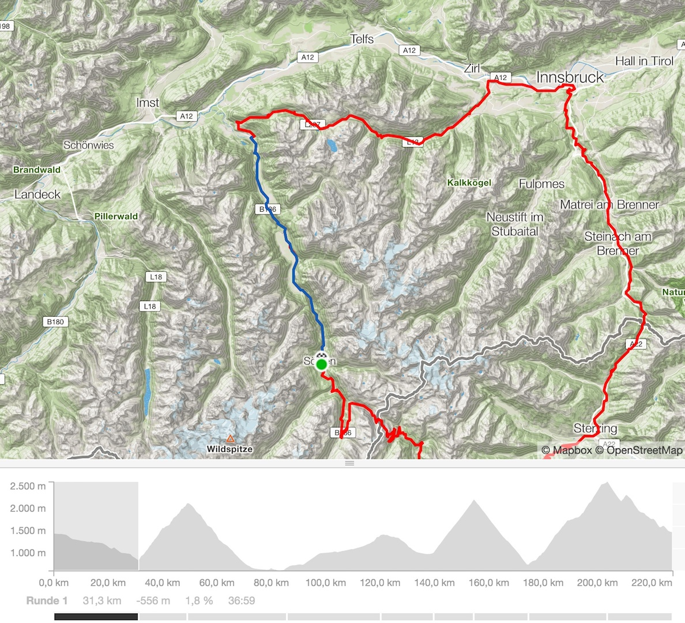
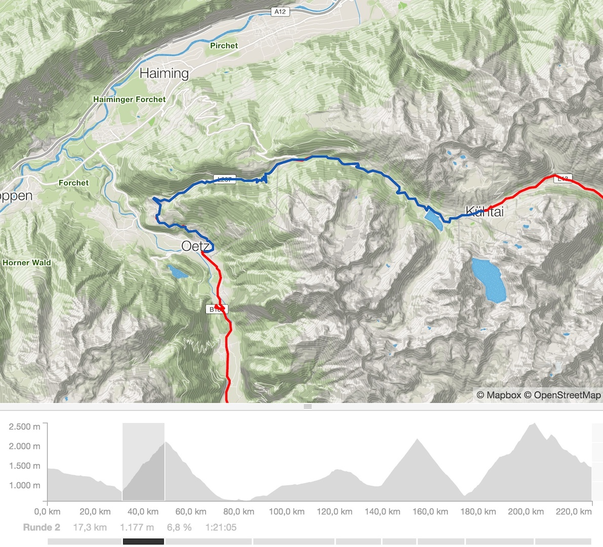
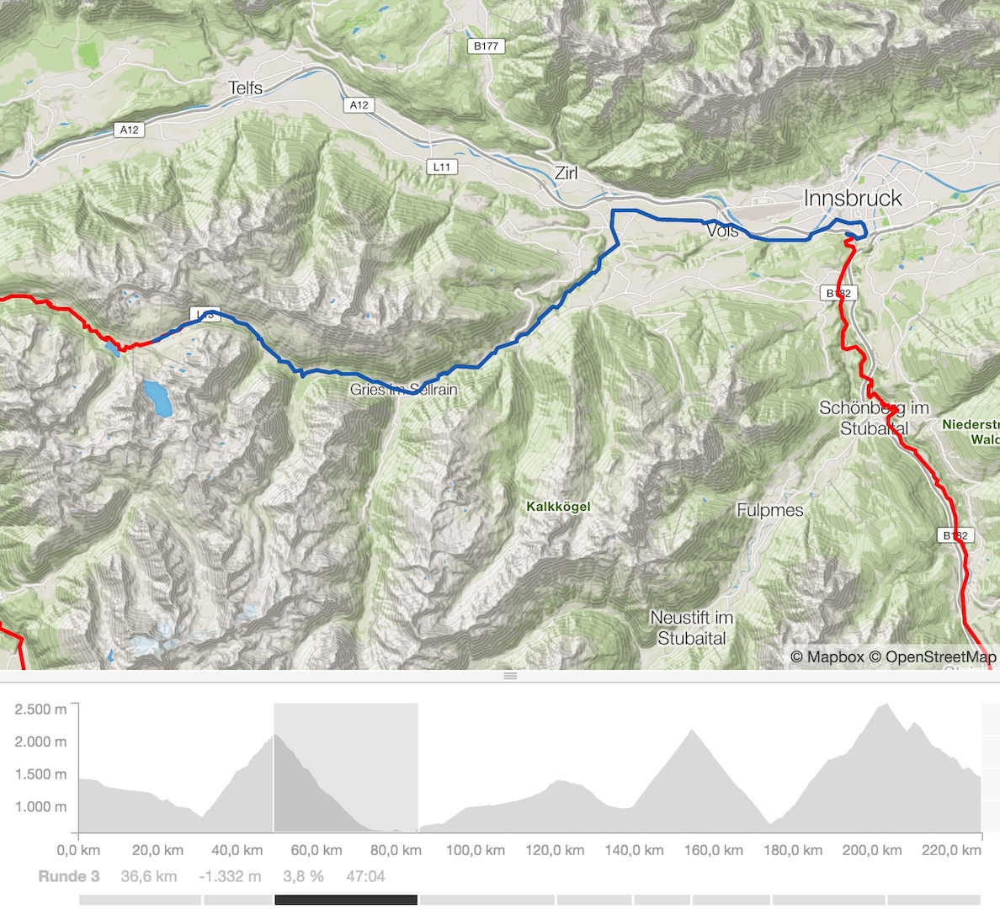
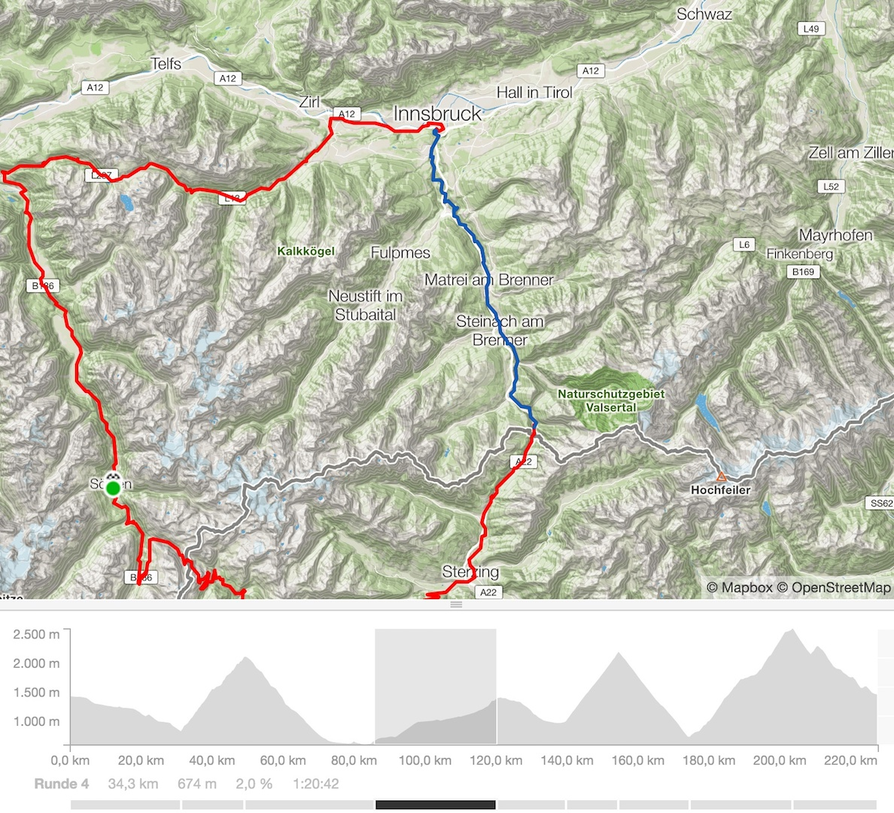
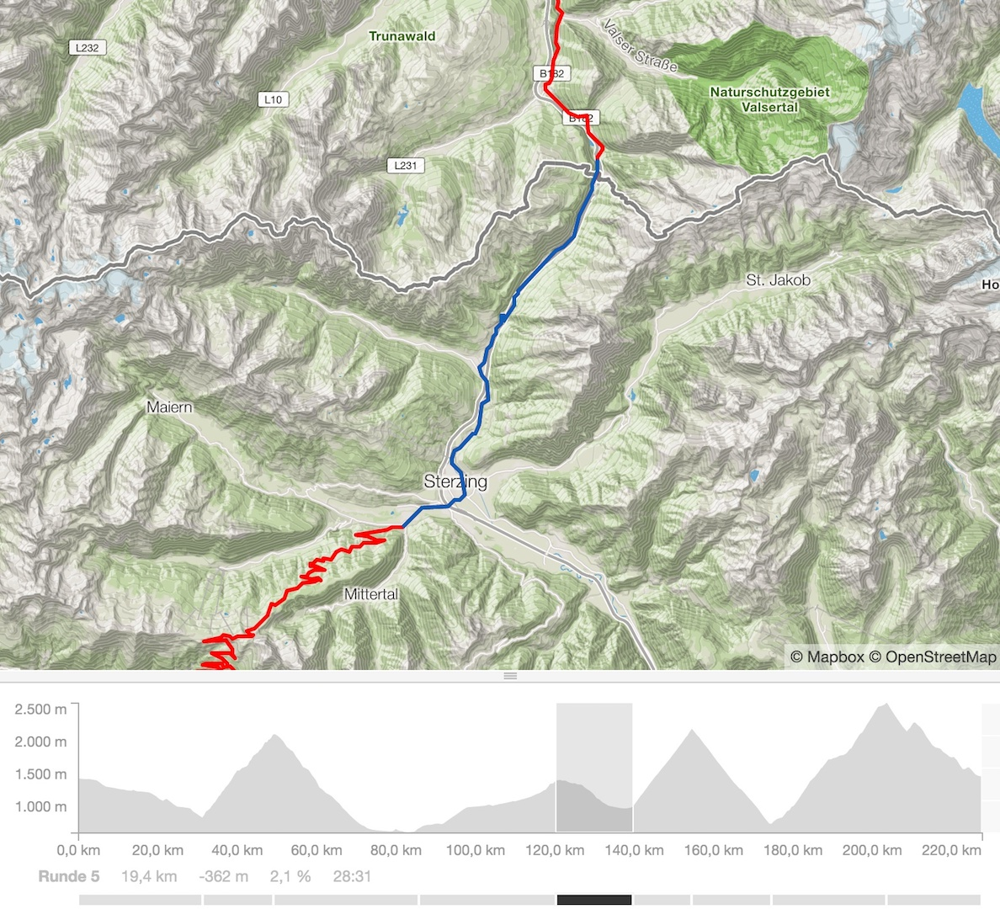
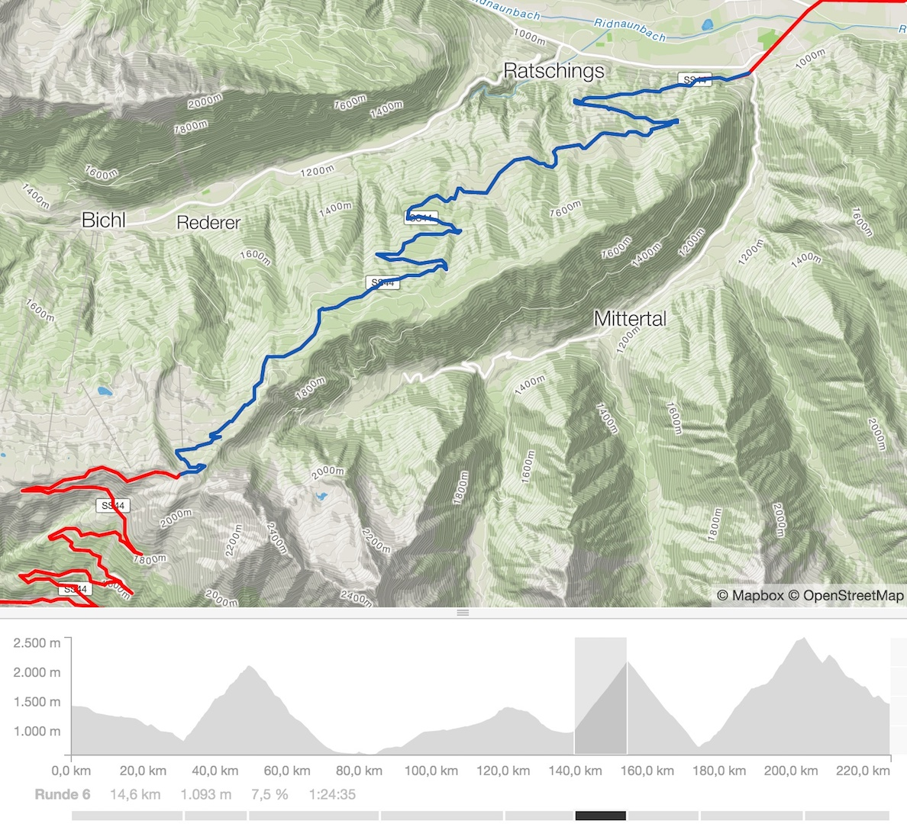
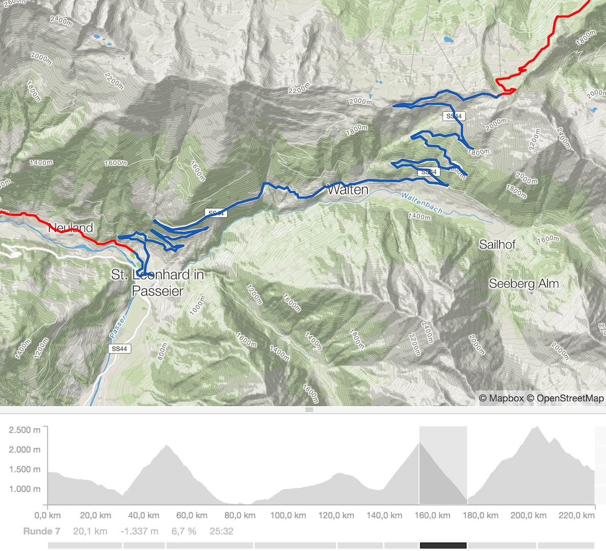
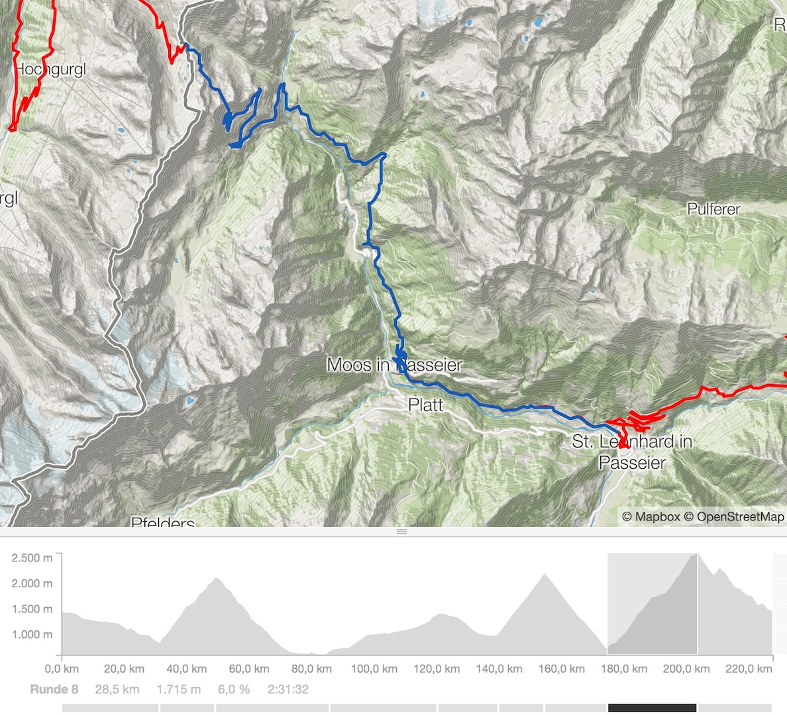
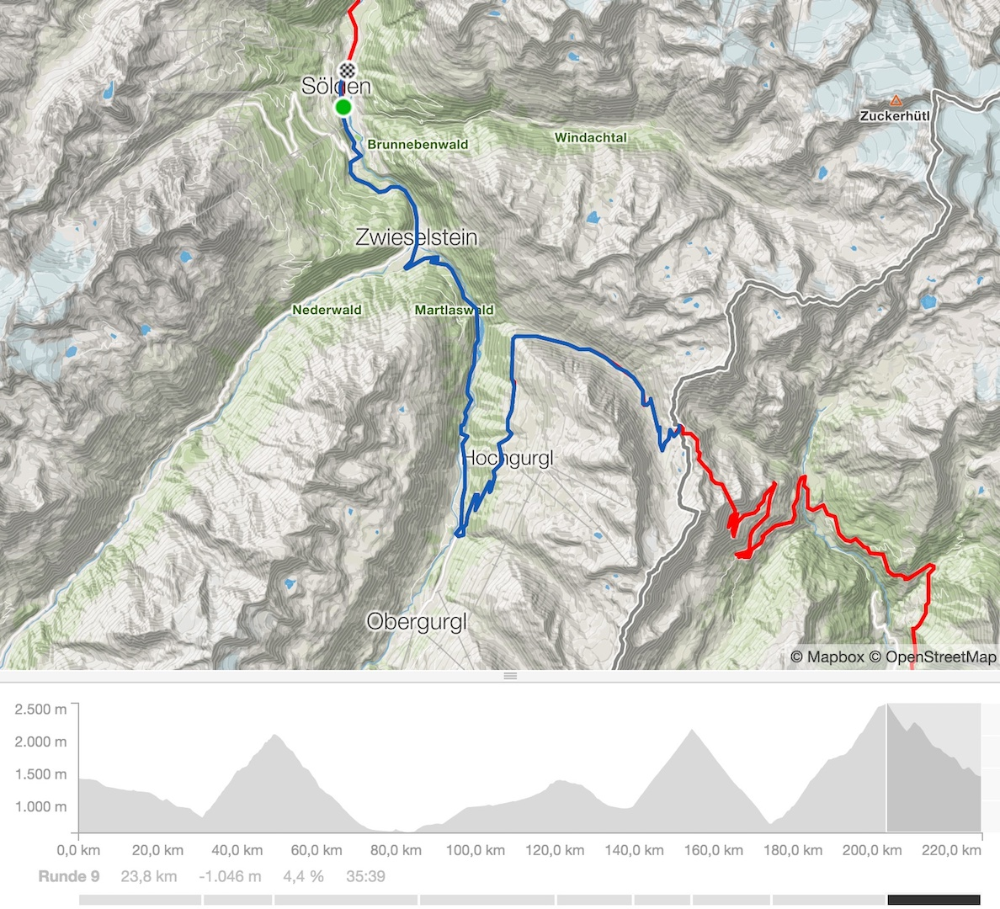

Ötztaler Radmarathon – Die Strecke im Detail. Was erwartet mich? Meine Erfahrung!

Der Ötztaler Radmarathon. Die Strecke. 5500 Höhenmeter, 238 Kilometer, 4 Alpenpässe, 4 Klimazonen, Kühtai, Brenner, Jaufenpass, Timmelsjoch – alles an einem einzigen Tag. Alles für einen Traum!
Was erwartet mich? Wo sollte ich Obacht geben, mich zurückhalten? Wo wartet der Topspeed? Wann kann ich Körner sparen? Meine Erfahrung!
Die Strecke im Detail
Der Ötztaler Radmarathon ist mehr als nur eine Sportveranstaltung. Für eines der härtesten Radrennen ist eine gute Vorbereitung die halbe Miete. Umso wichtiger ist es gerade für Neulinge sich so gut es irgendmöglich ist mit dem Streckenverlauf auseinander zu setzen. Wer einzelne Abschnitte bereits kennt desto besser. Es scheint aber unmöglich einmal die Strecke als Generalprobe am Vortag abgefahren zu sein. Schauen wir uns die jeweiligen Abschnitte mal im Detail an.
Sölden – Oetz

6.45 Startschuss in Sölden. Die ersten 32 Kilometer lassen sich gut angehen. Alles bergab und der Schnitt auf der ersten Kilometer wird zum Kühtai gleich zerstört. Wichtig für diesen Abschnitt ist, dass ich nicht stürze und mich aus den Postionskämpfen einfach raushalte. Bereits hier ein DNF zu kassieren ist sehr ärgerlich.
Oetz – Kühtai

Der Anstieg von Oetz zum Kühtai (2.017 m) ist landschaftlich mit Sicherheit sehr reizvoll. Wobei sich eh die grundsätzliche Frage stellt wie viel Aufmerksamkeit ich landschaftlichen Gesichtspunkten schenken werde. Generelles Problem aber an Tagen wie diesen.
Im Kreisverkehr in Oetz geht´s rechts weg und direkt zur Sache. Mittendrin statt nur dabei. Mit bis zu 14% Steigungen ist ab jetzt zu rechnen. Die Rampen zudem sehr unrhythmisch zu fahren. Wichtig ist hier ruhig zu bleiben und sich auf sein Tempo zu fokussieren. Es verleitet schon am Anfang zu überpowern. Ich werde hier mit sehr vielen Mitstreitern unterwegs sein, die eh alle schneller sind.
Kühtai – Innsbruck

Am Kühtai wartet auf 2.017 Metern Höhe die erste Labestation. Die Abfahrt ist nicht ungefährlich. Lange Geraden ermöglichen mir vielleicht einen neuen persönlichen Max-Speedrekord zu stellen. Allein schon ohne die Kurbel zu drehen sind schnell an die 90 Sachen drin. Einige Weideroste kreuzen immer wieder die Straße. Vorsicht ist geboten!
Innsbruck – Brenner

Hauptproblem der Strecke Innsbruck Brenner sind normal die vielen, vielen Touris, die sich gerne die Maut für den Brennero sparen möchten. Nicht an diesem Tag. Das Stück ist gesperrt und gehört ganz dem Radsport. Gemessen an dem was gerade am Kühtai geboten war und was noch kommt ist der Brennerpass leichtes Spiel. Er ist einfach nur lange bei durchschnittlich 3-4 Prozent Steigung. Die einzige Gefahr, die hier besteht, dass ich mich verleiten lasse den Pass viel zu schnell zu fahren und unnötige Körner auf der Strecke bleiben, die ich am Timmelsjoch brauche. Also gute Gruppe suchen, verstecken, keine Führungsarbeit und mitziehen lassen.
Brenner – Sterzing

An der Passhöhe Brenner ist die nächste Labestation. Die Abfahrt ist wenig spektakulär. Der Kopf ist eh schon am Jaufenpass.
Sterzing – Jaufenpass

Der nördlichste Übergang, der ganz auf italienischem Gebiet liegt. Von Sterzing aus steigt die Straße konstant aber stetig mit humanen Prozentwerten. Insgesamt lässt sich alles sehr angenehm fahren. Nicht umsonst ist der Jaufenpass sehr beliebt unter Rennradfahrern.
Jaufenpass – St. Leonhard

Die Abfahrt vom Jaufenpass nach St.Leonhard lässt Rennfahrerherzen höher schlagen. Die Kehren lassen sich harmonisch fahren und es macht richtig Spaß den Weg nach St.Leonhard so schnell wie möglich hinter sich zu lassen. Der Straßenbelag übrigens perfekt – neu!
Finale am Timmelsjoch

Über die genaue Höhenangabe streiten sich ja die Geister. Es ist auf jeden Fall einer der höchsten Pässe der Ostalpen. Auf jeden Fall das Dach des Ötztaler Radmarathons. 2470 Meter mindestens. Die Südostrampe vom Passeiertal ist der finale Richter über Niederlage oder Erfolg beim Ötzi. Die ersten Kilometer, 6 ungefähr, sind noch relativ moderat und angenehm, danach fallen die Prozente seltenst unter 8. Dem zwischenzeitlich „angenehmen“ Teil zwischen Kilometer 15 und 19 folgen brutale Rampen von bis zu 18%. Das wird richtig weh tun. Vor allem nach dem bis dato absolviertem Frühstücksfernsehen und Nachmittagsprogramm. Die letzten Kehren bis zum Tunnel sind wie in Stein gemeißelt und vom traumhaftem Panorama umgeben.
Timmelsjoch – Sölden

Die Abfahrt nach Sölden kann ich nochmal richtig genießen. Die Kür zum Abschluss. Die 200 anfallenden Höhenmeter zur Mautstation will ich mal unter der B-Note verbuchen. Wer hier ist hat es geschafft. Mein Traum wird wahr.
‹ Ötztaler Radmarathon – Karenzzeiten und Taktik. Marschtabelle und Verpflegungsplanung!